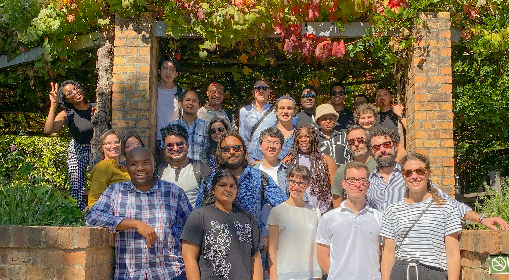

 MeerKAT Large Area Synoptic Survey
MeerKAT Large Area Synoptic Survey
Mario Santos - PI
Laura Wolz - Deputy PI
Jingying Wang - Steering Team
Joe Mohr - Steering Team
Keith Grainge - Steering Team
Marta Spinelli - Steering Team
Stefano Camera - Steering Team
Ainulnabilah Nasirudin
Aishrila Mazumder
Akriti Sinha
Alkistis Pourtsidou
Benedict Bahr-Kalus
Brandon Bisschoff
Brandon Engelbrecht
Bruno Benedito Bizarria
Cyril Tasse
Daniel Tassie
David Bacon
David Parkinson
Duncan Watts
Federico Montano
Felicia Setshabe
Feng Wang
Gabriele Autieri
Geoff Murphy
Giulia Piccirilli
Iara Neves
Isabella Paola Carucci - Foregrounds WG Lead
Jamie Incley
Jiakang Han
Jie Cao
José Fonseca - Simulation and Forecast WG Lead
José Luis Bernal
José Silva
Karin Fornazier -
Katrine Alice Glasscock
Kenda Knowles
Maria Berti
Matilde Barberi Squarotti
Matteo Viel
Matthias Hoeft
Matthias Klein
Melis Irfan
Mihlali Maxengana
Mogamad-Junaid Townsend
Mosima Portia Masipa
Oleg Smirnov
Pauline Gorbatchev
Phil Bull
Piyanat Kittiwisit - SARAO and Survey Planning Lead
Qizhe Tang
Sarvesh Mangla
Sefa Pamuk
Shubham Bhagat
Sifiso Mahlalela
Siyambonga Matshawule
Sourabh Paul - OTF WG co-lead
Starck Jean-Luc
Steve Cunnington - Power spectrum WG Lead
Suman Chatterjee - OTF WG co-lead
Tamera Kassie
Tamirat Gogo
Teo Böhme
Thea Hauxwell
Thiyagarajan Ranganathan
Tianyang Liu
Tobias Russell
Victoria Nakafingo
Victoria Samboco
Wenkai Hu - Calibration WG Lead
Yichao Li
Yin-Zhe Ma
Yu'Er Jiang
Yvette Perrott
Zhao Boyan
Zhaoting Chen
Zheng Zhang